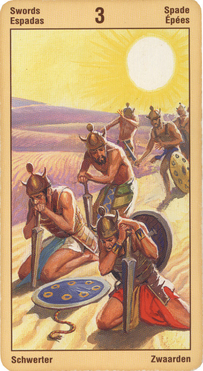

Тройка Мечей
Значение: Эту карту обычно вытягивает человек, сосредотачивающий все свое внимание на какой-то одной проблеме, тогда как проблем у него на самом деле гораздо больше. Во всяком случае, то, о чем он горюет, для него сейчас не самое главное, но он об этом не знает или не хочет думать.
Когда выпадает эта карта, рекомендуется вытянуть к ней еще три, чтобы выяснить, в чем заключаются “кручины” спрашивающего.
Эту карту часто считают символом огорчений, главным образом, из-за несчастной любви. Главное значение Тройки Мечей - выбор, сделанный вопреки чувству. А вот что это, малодушие или, наоборот, шаг к освобождению, можно понять, лишь зная подоплеку заданного вопроса и проверив остальные выпавшие карты. В ситуациях, когда чувства жестоко подавляются разумом, эта карта, конечно, имеет негативный характер. Но если она показывает, что нам силой разума удалось вырваться из плена какой-либо зависимости, освободиться от сомнительных привычек, то это - шаг хоть и болезненный, но необходимый.
Горе, Печаль.
Мысль человека должна смириться перед разумными законами мира - и тогда он с легким сердцем сможет принять то, что прежде не вмещалось в его сознании.
В прямом положении карты: отвращение, скорбь, несовместимость, противопоставление, расставание, недостижимость. Тройка мечей всегда символизирует стремление к недостижимому идеалу, отказ от действительности и вместе с тем неспособность от этой действительности уйти.
Мечи всегда действуют только в случае необходимости, но прощание и разлука - частая необходимость, причиняющая сердцу страдания, увы - это еще одно значение этой карты, так же как и горькая правда, причиняющая боль. В тройке мечей звучит также и мотив несогласия с действительностью, поэтому карта может символизировать также - противодействие, необщительность, антипатию, нелюдимость, несовпадении.
Тройка Мечей - знак того, что вам надлежит сделать выбор и найти правильный путь для реализации накопленной вами силы.
Оказавшись в раскладе рядом со Старшим Арканом, Тройка Мечей, соответственно своей характеристике, усиливает присущее этому Аркану значение.
Карта разрыва, распада. Развод, выяснение отношений, скандалы, рукоприкладство. Любовный треугольник. Ненависть, драки, болезнь, безденежье.
В перевернутом виде она означает, что такая ситуация у спрашивающего была, но теперь она уже в прошлом.
Эта карта побуждает вас избавиться от тоски или очистить атмосферу, вступив в спор или отстаивая в ссоре свою позицию.
В перевернутом положении действие отрицательных аспектов усиливается, давая иллюзии, заблуждения, галлюцинации, рассеянность и неисправимые ошибки.
В отрицательном значении: растерянность, расстройство, душевное заболевание. Помехи, потери, стрессы. Также карта советует в данный момент избегать хирургических операций.
Эттейлла- Ключевые слова: Расстояние. Конфликт индиви¬дуальности. Разделение. Или обеспокоенная любовь, теневой бизнес.
Эта карта сулит вам слезы и рыдания; разрыв отношений, разбитую любовь, разлуку, расставание, развод; ссору, конфликт, эгоизм; возникнет некто, совершающий нечестный поступок. Карта может означать, что что-то потеряно или отложено на какое-то время.
В перевернутом положении эта карта предвещает различного рода ошибки, взгляд советующегося на ве¬щи, мало сообразный со здравым смыслом. В делах воцарится (или уже царит) беспорядок, разлад; умствен¬ное расстройство (не обязательно в физиологическом смысле, но что-то явно заставляет Спрашивающего совершать бессмысленные поступки); грядут стычки и ссоры; война не за горами (пусть это со стороны и будет казаться бурей в стакане воды, но она вас весьма чувствительно коснется).